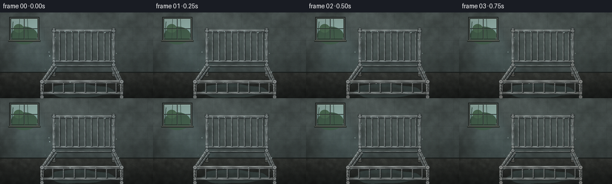
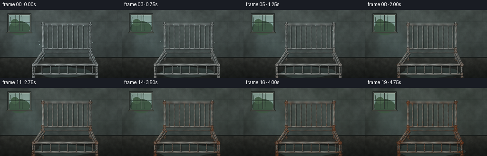
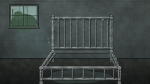
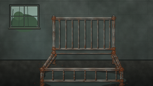
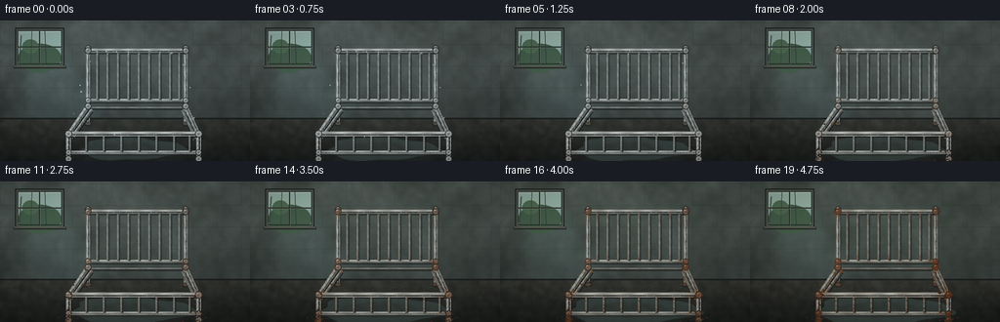
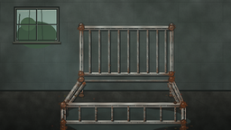
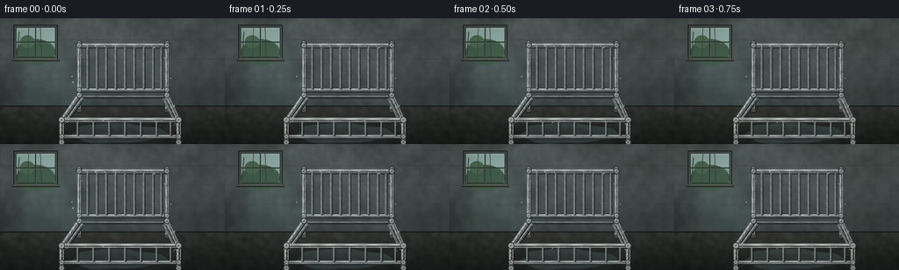

CODING AGENTS AS PIXEL WORLD MODELS
traex/DeepSeek-V4.1-Flash · phygen_160
点击播放 · 原生 RGB 像素
逐轮保存的候选
回放视频、检查图与代码变化。
每份候选均可单独播放。实际图片检查记录在下方工具轨迹中。
候选 01播放与检查图
点击播放 · 原生 RGB 像素


展开代码变化
--- 上一保存版本
+++ 本次保存版本
@@ -0,0 +1,442 @@
+from pathlib import Path
+import math
+
+import numpy as np
+from PIL import Image, ImageDraw, ImageFilter
+from scipy.ndimage import gaussian_filter, gaussian_filter1d
+
+import artifact_io
+
+
+CASE_DIR = Path(__file__).resolve().parent
+W, H = 256, 144
+SCALE = 3
+RW, RH = W * SCALE, H * SCALE
+NFRAMES = 20
+
+
+def clamp01(value):
+ return np.clip(value, 0.0, 1.0)
+
+
+def mix(a, b, amount):
+ amount = np.asarray(amount, dtype=np.float32)
+ if amount.ndim:
+ amount = amount[..., None]
+ return np.asarray(a, dtype=np.float32) * (1.0 - amount) + np.asarray(b, dtype=np.float32) * amount
+
+
+def smooth_noise(shape, sigma, seed):
+ rng = np.random.default_rng(seed)
+ field = rng.normal(size=shape).astype(np.float32)
+ field = gaussian_filter(field, sigma=sigma, mode="reflect")
+ lo, hi = np.percentile(field, [2, 98])
+ return clamp01((field - lo) / max(hi - lo, 1e-5))
+
+
+def add_rgba(base, overlay):
+ base.alpha_composite(overlay)
+
+
+def make_background(t):
+ """Concrete, damp plaster, a grimy high window, and a wet floor."""
+ yy, xx = np.mgrid[0:RH, 0:RW].astype(np.float32)
+ floor_y = int(RH * 0.705)
+
+ wall = np.empty((RH, RW, 3), dtype=np.float32)
+ top = np.array([91, 102, 101], dtype=np.float32)
+ bottom = np.array([58, 67, 67], dtype=np.float32)
+ grad = clamp01((yy / floor_y) * 0.92)
+ wall[:] = top * (1.0 - grad[..., None]) + bottom * grad[..., None]
+
+ broad = smooth_noise((RH, RW), 24, 10)
+ medium = smooth_noise((RH, RW), 7, 11)
+ fine = smooth_noise((RH, RW), 1.2, 12)
+ texture = (broad - 0.5) * 0.22 + (medium - 0.5) * 0.12 + (fine - 0.5) * 0.055
+ wall *= (1.0 + texture[..., None])
+
+ # Green-grey damp blooms creep upward from the floor as the years pass.
+ damp_height = 48 + 72 * t
+ damp = clamp01((floor_y + 12 - yy) / damp_height)
+ damp *= 0.28 + 0.72 * smooth_noise((RH, RW), 15, 13)
+ damp *= 0.18 + 0.55 * t
+ wall = mix(wall, np.array([44, 60, 52], dtype=np.float32), damp * 0.45)
+
+ # Long mineral streaks below the window and along the wall.
+ streak_field = smooth_noise((RH, RW), 5, 14)
+ vertical = gaussian_filter1d(smooth_noise((1, RW), 10, 15)[0, :], 4)
+ streak = clamp01(vertical[None, :] * 1.35 - 0.43) * clamp01(yy / floor_y)
+ streak *= (0.55 + 0.45 * streak_field) * (0.25 + 0.75 * t)
+ wall = mix(wall, np.array([48, 49, 42], dtype=np.float32), streak * 0.32)
+
+ # Concrete block courses: subtle at video scale, useful up close.
+ block_img = Image.fromarray(np.uint8(np.clip(wall, 0, 255)))
+ bdraw = ImageDraw.Draw(block_img, "RGBA")
+ row_h = 67
+ block_w = 148
+ for row, y in enumerate(range(6, floor_y, row_h)):
+ bdraw.line((0, y, RW, y), fill=(35, 43, 43, 55), width=2)
+ bdraw.line((0, y + 2, RW, y + 2), fill=(130, 139, 134, 18), width=1)
+ offset = (row % 2) * block_w // 2
+ for x in range(-block_w + offset, RW + block_w, block_w):
+ bdraw.line((x, y, x, min(y + row_h, floor_y)), fill=(37, 45, 45, 42), width=2)
+
+ # Window glow on the wall, with a cool cast toward the bed.
+ glow = Image.new("RGBA", (RW, RH), (0, 0, 0, 0))
+ gd = ImageDraw.Draw(glow, "RGBA")
+ gd.polygon(
+ [(52, 33), (192, 28), (337, 320), (75, 335)],
+ fill=(124, 169, 174, 30),
+ )
+ glow = glow.filter(ImageFilter.GaussianBlur(18))
+ block_img = Image.alpha_composite(block_img.convert("RGBA"), glow)
+
+ # Grime around the window and its bright, dirty daylight.
+ wd = ImageDraw.Draw(block_img, "RGBA")
+ wx0, wy0, wx1, wy1 = 53, 29, 190, 134
+ wd.rectangle((wx0 - 7, wy0 - 7, wx1 + 7, wy1 + 7), fill=(35, 42, 41, 235))
+ wd.rectangle((wx0 - 3, wy0 - 3, wx1 + 3, wy1 + 3), fill=(104, 112, 106, 255))
+ wd.rectangle((wx0, wy0, wx1, wy1), fill=(143, 179, 174, 255))
+ # A muted sky and a suggestion of foliage beyond the glass.
+ wd.rectangle((wx0, wy0, wx1, wy0 + 48), fill=(159, 192, 185, 255))
+ wd.ellipse((wx0 + 2, wy0 + 42, wx1 - 2, wy1 + 26), fill=(72, 101, 82, 255))
+ wd.ellipse((wx0 + 15, wy0 + 29, wx0 + 65, wy0 + 72), fill=(83, 117, 91, 220))
+ # Window grime and water marks.
+ wd.line((wx0 + 4, wy0 + 8, wx1 - 5, wy0 + 4), fill=(221, 231, 219, 72), width=2)
+ wd.line((wx0 + 12, wy0 + 17, wx0 + 6, wy1 - 3), fill=(56, 76, 67, 95), width=3)
+ wd.line((wx0 + 44, wy0 + 4, wx0 + 41, wy1 - 3), fill=(61, 79, 70, 52), width=2)
+ wd.line((wx0 + 84, wy0 + 2, wx0 + 88, wy1 - 2), fill=(50, 68, 60, 65), width=2)
+ wd.rectangle((wx0, wy0, wx1, wy1), outline=(42, 50, 48, 255), width=3)
+ wd.line(((wx0 + wx1) // 2, wy0, (wx0 + wx1) // 2, wy1), fill=(39, 47, 45, 255), width=4)
+ wd.line((wx0, (wy0 + wy1) // 2, wx1, (wy0 + wy1) // 2), fill=(39, 47, 45, 255), width=4)
+ wd.line(((wx0 + wx1) // 2 + 2, wy0, (wx0 + wx1) // 2 + 2, wy1), fill=(135, 151, 143, 72), width=1)
+ wd.line((wx0, (wy0 + wy1) // 2 + 2, wx1, (wy0 + wy1) // 2 + 2), fill=(135, 151, 143, 72), width=1)
+
+ # Sill and the dark wet seam where wall meets floor.
+ wd.rectangle((wx0 - 12, wy1 + 5, wx1 + 13, wy1 + 13), fill=(47, 53, 50, 255))
+ wd.line((wx0 - 10, wy1 + 6, wx1 + 10, wy1 + 6), fill=(139, 143, 130, 165), width=2)
+ wd.line((0, floor_y - 2, RW, floor_y - 2), fill=(28, 34, 33, 230), width=7)
+
+ scene = block_img.convert("RGB")
+
+ # Floor: darker concrete with perspective joints and a wet sheen.
+ floor = np.empty((RH - floor_y, RW, 3), dtype=np.float32)
+ fy = yy[floor_y:] - floor_y
+ fgrad = clamp01(fy / max(RH - floor_y - 1, 1))
+ floor[:] = np.array([55, 58, 55], np.float32) * (1.0 - fgrad[..., None]) + np.array([29, 33, 32], np.float32) * fgrad[..., None]
+ floor *= (0.83 + 0.26 * medium[floor_y:, :, None])
+ floor *= (0.94 + 0.10 * fine[floor_y:, :, None])
+ scene_np = np.array(scene, dtype=np.float32)
+ scene_np[floor_y:] = floor
+ scene = Image.fromarray(np.uint8(np.clip(scene_np, 0, 255)))
+
+ fd = ImageDraw.Draw(scene, "RGBA")
+ vanish = (RW * 0.5, floor_y - 5)
+ for x in (-260, -80, 120, 330, 560, 820, 1080):
+ fd.line((vanish[0], vanish[1], x, RH), fill=(32, 36, 34, 52), width=2)
+ for y, alpha in ((floor_y + 24, 42), (floor_y + 63, 38), (floor_y + 110, 34)):
+ fd.line((0, y, RW, y), fill=(31, 35, 34, alpha), width=2)
+ # A few shallow cracks.
+ fd.line((648, 329, 691, 353, 682, 386, 723, 417), fill=(29, 33, 32, 125), width=2)
+ fd.line((121, 341, 157, 365, 146, 393), fill=(31, 35, 33, 96), width=1)
+
+ # Puddle grows over the years; its edge is deliberately irregular.
+ puddle_rgba = Image.new("RGBA", (RW, RH), (0, 0, 0, 0))
+ pd = ImageDraw.Draw(puddle_rgba, "RGBA")
+ grow = 0.78 + 0.22 * t
+ cx, cy = 405, 395
+ rx, ry = 210 * grow, 45 * grow
+ points = []
+ for i in range(72):
+ a = 2 * math.pi * i / 72
+ wobble = 1.0 + 0.08 * math.sin(3 * a + 1.2) + 0.05 * math.sin(7 * a - 0.4)
+ points.append((cx + rx * math.cos(a) * wobble, cy + ry * math.sin(a) * wobble))
+ pd.polygon(points, fill=(79, 102, 101, 112))
+ pd.ellipse((cx - rx * 0.64, cy - ry * 0.55, cx + rx * 0.55, cy + ry * 0.55), fill=(94, 118, 116, 72))
+ puddle_rgba = puddle_rgba.filter(ImageFilter.GaussianBlur(1.2))
+ scene = Image.alpha_composite(scene.convert("RGBA"), puddle_rgba)
+
+ # Broken reflection of the window in the wet floor.
+ refl = Image.new("RGBA", (RW, RH), (0, 0, 0, 0))
+ rd = ImageDraw.Draw(refl, "RGBA")
+ for i in range(8):
+ x = 177 + i * 13
+ y0 = 372 + (i % 3) * 7
+ rd.line((x, y0, x - 4, y0 + 31), fill=(151, 177, 167, 30), width=4)
+ refl = refl.filter(ImageFilter.GaussianBlur(5))
+ scene = Image.alpha_composite(scene, refl)
+
+ return scene.convert("RGB")
+
+
+def rust_amount(t, along, joint_distance, bias, phase):
+ g = 0.015 + 0.97 * (t ** 1.48)
+ joint = 0.47 + 0.82 * math.exp(-joint_distance / 24.0)
+ patch = 0.64 + 0.21 * math.sin(along * 19.0 + phase) + 0.15 * math.sin(along * 43.0 - phase * 0.7)
+ amount = g * joint * patch * bias
+ return float(clamp01(amount))
+
+
+def draw_tube(draw, p0, p1, width, t, seed, clean=(142, 151, 153), bias=1.0,
+ shadow=(27, 33, 34), highlight=(220, 228, 226), back=False):
+ x0, y0 = p0
+ x1, y1 = p1
+ length = math.hypot(x1 - x0, y1 - y0)
+ steps = max(8, int(length / 2.1))
+ phase = (seed * 1.913) % (2 * math.pi)
+ rng = np.random.default_rng(1000 + seed)
+
+ clean = np.array(clean, dtype=np.float32)
+ shadow = np.array(shadow, dtype=np.float32)
+ highlight = np.array(highlight, dtype=np.float32)
+ rust_mid = np.array([126, 65, 35], dtype=np.float32)
+ rust_light = np.array([174, 102, 56], dtype=np.float32)
+ rust_dark = np.array([60, 40, 29], dtype=np.float32)
+
+ # Soft occlusion under the round steel.
+ draw.line(
+ (x0 + 2.5, y0 + 3.5, x1 + 2.5, y1 + 3.5),
+ fill=tuple(np.uint8(shadow * 0.75)) + (135,),
+ width=int(width + 3),
+ )
+
+ for i in range(steps + 1):
+ along = i / steps
+ px = x0 + (x1 - x0) * along
+ py = y0 + (y1 - y0) * along
+ joint_dist = min(along, 1.0 - along) * length
+ rust = rust_amount(t, along, joint_dist, bias, phase)
+ body = mix(clean, rust_mid, rust)
+ body *= 0.90 + 0.13 * math.sin(along * 31.0 + phase)
+ radius = max(1, int(round(width / 2)))
+ draw.ellipse((px - radius, py - radius, px + radius, py + radius), fill=tuple(np.uint8(np.clip(body, 0, 255))) + (255,))
+
+ # Cylindrical highlight, broken up where rust has eaten the surface.
+ hx = -width * 0.12
+ hy = -width * 0.20
+ for i in range(steps):
+ along = (i + 0.5) / steps
+ px = x0 + (x1 - x0) * along
+ py = y0 + (y1 - y0) * along
+ joint_dist = min(along, 1.0 - along) * length
+ rust = rust_amount(t, along, joint_dist, bias, phase)
+ shine = (1.0 - rust) * (0.44 + 0.24 * math.sin(along * 33.0 + phase + 0.8))
+ if shine <= 0.025:
+ continue
+ col = mix(clean, highlight, 0.68) * (0.92 + 0.12 * shine)
+ col = mix(col, rust_light, rust * 0.45)
+ alpha = int(np.clip(95 + 145 * shine, 0, 225))
+ r = max(1.0, width * 0.12)
+ draw.ellipse((px + hx - r, py + hy - r, px + hx + r, py + hy + r), fill=tuple(np.uint8(np.clip(col, 0, 255))) + (alpha,))
+
+ # Darker lower edge adds roundness.
+ for i in range(0, steps, 2):
+ along = (i + 0.5) / steps
+ px = x0 + (x1 - x0) * along
+ py = y0 + (y1 - y0) * along
+ joint_dist = min(along, 1.0 - along) * length
+ rust = rust_amount(t, along, joint_dist, bias, phase)
+ r = max(1.0, width * 0.11)
+ col = mix(shadow, rust_dark, rust * 0.65)
+ draw.ellipse((px + width * 0.18 - r, py + width * 0.24 - r,
+ px + width * 0.18 + r, py + width * 0.24 + r),
+ fill=tuple(np.uint8(np.clip(col, 0, 255))) + (115,))
+
+ # Corrosion blooms escape the tube edge in later frames.
+ n_spots = int(round(1 + 6 * max(0.0, t - 0.25) * bias))
+ for _ in range(n_spots):
+ along = float(rng.uniform(0.02, 0.98))
+ joint_dist = min(along, 1.0 - along) * length
+ rust = rust_amount(t, along, joint_dist, bias, phase)
+ if rust < 0.42:
+ continue
+ px = x0 + (x1 - x0) * along + rng.normal(0, width * 0.45)
+ py = y0 + (y1 - y0) * along + rng.normal(0, width * 0.45)
+ sr = rng.uniform(width * 0.16, width * 0.42)
+ col = mix(rust_mid, rust_dark, rng.uniform(0.2, 0.7))
+ draw.ellipse((px - sr, py - sr * 0.72, px + sr, py + sr * 0.72),
+ fill=tuple(np.uint8(np.clip(col, 0, 255))) + (int(70 + 120 * rust),))
+
+
+def draw_joint(draw, center, radius, t, seed, clean=(150, 159, 160), bias=1.0):
+ cx, cy = center
+ g = 0.015 + 0.97 * (t ** 1.48)
+ rust = float(clamp01(g * bias * (0.86 + 0.17 * math.sin(seed * 2.7))))
+ dark = mix(np.array([38, 45, 46]), np.array([55, 38, 28]), rust * 0.75)
+ body = mix(np.array(clean), np.array([121, 62, 34]), rust)
+ light = mix(np.array([223, 231, 229]), np.array([171, 100, 54]), rust * 0.65)
+ draw.ellipse((cx - radius - 2, cy - radius - 2, cx + radius + 2, cy + radius + 2),
+ fill=tuple(np.uint8(dark)) + (255,))
+ draw.ellipse((cx - radius, cy - radius, cx + radius, cy + radius),
+ fill=tuple(np.uint8(np.clip(body, 0, 255))) + (255,))
+ draw.ellipse((cx - radius * 0.60, cy - radius * 0.66, cx + radius * 0.08, cy - radius * 0.02),
+ fill=tuple(np.uint8(np.clip(light, 0, 255))) + (155,))
+ draw.ellipse((cx - radius * 0.23, cy - radius * 0.22, cx + radius * 0.26, cy + radius * 0.26),
+ outline=tuple(np.uint8(dark)) + (145,), width=max(1, int(radius * 0.15)))
+
+ # Pitted weld and orange seep around the joint.
+ if rust > 0.18:
+ rng = np.random.default_rng(3000 + seed)
+ for _ in range(int(4 + 14 * rust)):
+ a = rng.uniform(0, 2 * math.pi)
+ rr = rng.uniform(radius * 0.7, radius * 1.65)
+ sx = cx + math.cos(a) * rr
+ sy = cy + math.sin(a) * rr
+ sr = rng.uniform(0.8, max(1.2, radius * 0.32))
+ col = mix(np.array([124, 63, 34]), np.array([66, 43, 29]), rng.uniform(0.2, 0.75))
+ draw.ellipse((sx - sr, sy - sr * 0.8, sx + sr, sy + sr * 0.8),
+ fill=tuple(np.uint8(np.clip(col, 0, 255))) + (int(70 + 120 * rust),))
+
+
+def draw_condensation(draw, t, seed):
+ if t > 0.48:
+ return
+ rng = np.random.default_rng(seed)
+ strength = 1.0 - t / 0.48
+ positions = [
+ (300, 96), (329, 97), (361, 95), (394, 97), (426, 96), (458, 96), (489, 97), (530, 97),
+ (276, 126), (562, 134), (246, 198), (582, 205), (224, 288), (595, 302),
+ (255, 222), (571, 231), (230, 360), (591, 366), (352, 354), (481, 351),
+ ]
+ for i, (x, y) in enumerate(positions):
+ if rng.random() > strength:
+ continue
+ jitter = rng.normal(0, 2.0, size=2)
+ x += jitter[0]
+ y += jitter[1]
+ r = rng.uniform(1.0, 2.3)
+ draw.ellipse((x - r, y - r * 1.25, x + r, y + r * 1.25),
+ fill=(169, 201, 199, int(95 + 80 * strength)))
+ draw.ellipse((x - r * 0.35, y - r * 0.75, x + r * 0.18, y - r * 0.18),
+ fill=(231, 244, 239, int(110 + 90 * strength)))
+
+
+def draw_rust_debris(draw, t, seed):
+ if t < 0.35:
+ return
+ rng = np.random.default_rng(seed)
+ count = int(3 + 28 * t)
+ anchors = [(202, 421), (613, 421), (264, 315), (575, 315)]
+ for i in range(count):
+ ax, ay = anchors[i % len(anchors)]
+ angle = rng.uniform(0, 2 * math.pi)
+ dist = rng.uniform(4, 38 + 34 * t)
+ x = ax + math.cos(angle) * dist
+ y = ay + max(0, math.sin(angle)) * dist * 0.35 + rng.uniform(-3, 9)
+ w = rng.uniform(1.0, 4.0)
+ h = rng.uniform(0.5, 2.0)
+ col = (rng.integers(74, 139), rng.integers(42, 80), rng.integers(26, 48), rng.integers(90, 180))
+ draw.ellipse((x - w, y - h, x + w, y + h), fill=col)
+
+
+def render_bed(t):
+ # The bed is drawn over the damp room at three times the target resolution.
+ bed = Image.new("RGBA", (RW, RH), (0, 0, 0, 0))
+ draw = ImageDraw.Draw(bed, "RGBA")
+
+ back_clean = (123, 134, 136)
+ front_clean = (151, 159, 160)
+
+ # Rear headboard: the tall silhouette makes the object unmistakably a bed.
+ draw_tube(draw, (270, 315), (270, 92), 11, t, 11, clean=back_clean, bias=1.02, back=True)
+ draw_tube(draw, (570, 315), (570, 92), 11, t, 12, clean=back_clean, bias=1.02, back=True)
+ draw_tube(draw, (270, 92), (570, 92), 13, t, 13, clean=back_clean, bias=0.92, back=True)
+ draw_tube(draw, (270, 245), (570, 245), 9, t, 14, clean=back_clean, bias=1.04, back=True)
+
+ # Finials.
+ for x, seed in ((270, 21), (570, 22)):
+ draw.ellipse((x - 10, 76, x + 10, 96), fill=(48, 55, 55, 255))
+ draw.ellipse((x - 7, 78, x + 7, 92), fill=tuple(np.uint8(mix(np.array(back_clean), np.array([95, 57, 36]), 0.22 * t))) + (255,))
+ draw.ellipse((x - 4, 79, x + 2, 85), fill=(213, 221, 218, 150))
+
+ for i, x in enumerate((298, 330, 362, 394, 426, 458, 490, 522, 550)):
+ bias = 0.88 + 0.06 * (i % 3)
+ draw_tube(draw, (x, 102), (x, 240), 5, t, 30 + i, clean=back_clean, bias=bias, back=True)
+
+ # Back feet and their floor contact.
+ for x, seed in ((270, 41), (570, 42)):
+ draw_tube(draw, (x, 250), (x, 319), 10, t, seed, clean=back_clean, bias=1.35, back=True)
+ draw.ellipse((x - 11, 311, x + 11, 325), fill=(35, 39, 38, 255))
+ draw.ellipse((x - 8, 312, x + 8, 321), fill=tuple(np.uint8(mix(np.array([78, 82, 79]), np.array([101, 58, 34]), 0.55 * t))) + (255,))
+
+ # Bed rails receding toward the headboard.
+ draw_tube(draw, (270, 263), (210, 350), 12, t, 51, clean=(128, 139, 140), bias=1.15)
+ draw_tube(draw, (570, 263), (610, 350), 12, t, 52, clean=(128, 139, 140), bias=1.15)
+ draw_tube(draw, (280, 276), (220, 359), 8, t, 53, clean=(105, 116, 118), bias=1.23)
+ draw_tube(draw, (560, 276), (600, 359), 8, t, 54, clean=(105, 116, 118), bias=1.23)
+
+ # Two cross supports seen through the open frame.
+ draw_tube(draw, (282, 268), (558, 268), 5, t, 55, clean=(90, 99, 100), bias=1.35, back=True)
+ draw_tube(draw, (230, 344), (590, 344), 5, t, 56, clean=(102, 111, 111), bias=1.30)
+
+ # Front footboard: short, wide, and bright, giving strong perspective.
+ draw_tube(draw, (210, 348), (210, 425), 14, t, 61, clean=front_clean, bias=1.25)
+ draw_tube(draw, (610, 348), (610, 425), 14, t, 62, clean=front_clean, bias=1.25)
+ draw_tube(draw, (210, 348), (610, 348), 14, t, 63, clean=front_clean, bias=1.06)
+ draw_tube(draw, (210, 405), (610, 405), 10, t, 64, clean=front_clean, bias=1.20)
+ for i, x in enumerate((264, 318, 372, 426, 480, 534, 582)):
+ draw_tube(draw, (x, 355), (x, 400), 5, t, 70 + i, clean=front_clean, bias=1.08)
+
+ # Feet, casters, and localized oxidation where water collects.
+ for x, seed in ((210, 81), (610, 82)):
+ draw_tube(draw, (x, 410), (x, 426), 13, t, seed, clean=front_clean, bias=1.45)
+ draw.ellipse((x - 12, 419, x + 12, 431), fill=(31, 35, 35, 255))
+ draw.ellipse((x - 8, 421, x + 8, 429), fill=tuple(np.uint8(mix(np.array([85, 90, 87]), np.array([118, 68, 38]), 0.62 * t))) + (255,))
+
+ # Welds/joints are corrosion nuclei.
+ joints = [
+ ((270, 92), 8, 91, 0.92), ((570, 92), 8, 92, 0.92),
+ ((270, 245), 7, 93, 1.08), ((570, 245), 7, 94, 1.08),
+ ((270, 263), 8, 95, 1.15), ((570, 263), 8, 96, 1.15),
+ ((210, 348), 9, 97, 1.18), ((610, 348), 9, 98, 1.18),
+ ((210, 405), 7, 99, 1.28), ((610, 405), 7, 100, 1.28),
+ ((210, 425), 8, 101, 1.55), ((610, 425), 8, 102, 1.55),
+ ]
+ for center, radius, seed, bias in joints:
+ draw_joint(draw, center, radius, t, seed, clean=front_clean if center[1] > 330 else back_clean, bias=bias)
+
+ draw_condensation(draw, t, 500)
+ draw_rust_debris(draw, t, 600)
+ return bed
+
+
+def render_frame(index):
+ t = index / (NFRAMES - 1)
+ scene = make_background(t).convert("RGBA")
+ bed = render_bed(t)
+ scene = Image.alpha_composite(scene, bed)
+
+ # Subtle wet-film sheen and rust-colored bounce beneath the frame.
+ sheen = Image.new("RGBA", (RW, RH), (0, 0, 0, 0))
+ sd = ImageDraw.Draw(sheen, "RGBA")
+ sd.ellipse((175, 394, 646, 436), fill=(91, 109, 104, 22 + int(12 * t)))
+ sheen = sheen.filter(ImageFilter.GaussianBlur(11))
+ scene = Image.alpha_composite(scene, sheen)
+
+ arr = np.asarray(scene.convert("RGB"), dtype=np.float32)
+ yy, xx = np.mgrid[0:RH, 0:RW].astype(np.float32)
+ nx = (xx - RW / 2) / (RW / 2)
+ ny = (yy - RH / 2) / (RH / 2)
+ radius = np.sqrt(nx * nx + ny * ny) / math.sqrt(2)
+ vignette = 1.0 - 0.31 * clamp01(radius) ** 1.55
+ arr *= vignette[..., None]
+
+ # Years of dampness reduce contrast and push the room slightly green-brown.
+ arr *= (1.0 - 0.045 * t)
+ arr[..., 0] *= 1.0 + 0.018 * t
+ arr[..., 2] *= 1.0 - 0.035 * t
+ arr = np.clip(arr + np.array([1.5, 1.0, 0.5], np.float32), 0, 255)
+
+ high = Image.fromarray(np.uint8(arr), "RGB")
+ return np.asarray(high.resize((W, H), Image.Resampling.LANCZOS), dtype=np.uint8)
+
+
+def generate():
+ frames = np.stack([render_frame(i) for i in range(NFRAMES)])
+ return frames
+
+
+if __name__ == "__main__":
+ frames = generate()
+ artifact_io.save(frames, CASE_DIR)
+ print(f"saved {len(frames)} frames to {CASE_DIR}")
候选 02播放与检查图
点击播放 · 原生 RGB 像素

展开代码变化
--- 上一保存版本
+++ 本次保存版本
@@ -170,9 +170,9 @@
def rust_amount(t, along, joint_distance, bias, phase):
- g = 0.015 + 0.97 * (t ** 1.48)
- joint = 0.47 + 0.82 * math.exp(-joint_distance / 24.0)
- patch = 0.64 + 0.21 * math.sin(along * 19.0 + phase) + 0.15 * math.sin(along * 43.0 - phase * 0.7)
+ g = 0.005 + 0.92 * (t ** 1.72)
+ joint = 0.28 + 0.86 * math.exp(-joint_distance / 22.0)
+ patch = 0.58 + 0.22 * math.sin(along * 19.0 + phase) + 0.15 * math.sin(along * 43.0 - phase * 0.7)
amount = g * joint * patch * bias
return float(clamp01(amount))
@@ -189,9 +189,9 @@
clean = np.array(clean, dtype=np.float32)
shadow = np.array(shadow, dtype=np.float32)
highlight = np.array(highlight, dtype=np.float32)
- rust_mid = np.array([126, 65, 35], dtype=np.float32)
- rust_light = np.array([174, 102, 56], dtype=np.float32)
- rust_dark = np.array([60, 40, 29], dtype=np.float32)
+ rust_mid = np.array([116, 60, 32], dtype=np.float32)
+ rust_light = np.array([176, 100, 52], dtype=np.float32)
+ rust_dark = np.array([53, 36, 27], dtype=np.float32)
# Soft occlusion under the round steel.
draw.line(
@@ -207,7 +207,7 @@
joint_dist = min(along, 1.0 - along) * length
rust = rust_amount(t, along, joint_dist, bias, phase)
body = mix(clean, rust_mid, rust)
- body *= 0.90 + 0.13 * math.sin(along * 31.0 + phase)
+ body *= 0.97 + 0.09 * math.sin(along * 31.0 + phase)
radius = max(1, int(round(width / 2)))
draw.ellipse((px - radius, py - radius, px + radius, py + radius), fill=tuple(np.uint8(np.clip(body, 0, 255))) + (255,))
@@ -220,13 +220,13 @@
py = y0 + (y1 - y0) * along
joint_dist = min(along, 1.0 - along) * length
rust = rust_amount(t, along, joint_dist, bias, phase)
- shine = (1.0 - rust) * (0.44 + 0.24 * math.sin(along * 33.0 + phase + 0.8))
+ shine = (1.0 - rust) * (0.67 + 0.24 * math.sin(along * 33.0 + phase + 0.8))
if shine <= 0.025:
continue
col = mix(clean, highlight, 0.68) * (0.92 + 0.12 * shine)
col = mix(col, rust_light, rust * 0.45)
- alpha = int(np.clip(95 + 145 * shine, 0, 225))
- r = max(1.0, width * 0.12)
+ alpha = int(np.clip(130 + 125 * shine, 0, 245))
+ r = max(1.0, width * 0.14)
draw.ellipse((px + hx - r, py + hy - r, px + hx + r, py + hy + r), fill=tuple(np.uint8(np.clip(col, 0, 255))) + (alpha,))
# Darker lower edge adds roundness.
@@ -243,7 +243,7 @@
fill=tuple(np.uint8(np.clip(col, 0, 255))) + (115,))
# Corrosion blooms escape the tube edge in later frames.
- n_spots = int(round(1 + 6 * max(0.0, t - 0.25) * bias))
+ n_spots = int(round(1 + 4 * max(0.0, t - 0.35) * bias))
for _ in range(n_spots):
along = float(rng.uniform(0.02, 0.98))
joint_dist = min(along, 1.0 - along) * length
@@ -260,17 +260,17 @@
def draw_joint(draw, center, radius, t, seed, clean=(150, 159, 160), bias=1.0):
cx, cy = center
- g = 0.015 + 0.97 * (t ** 1.48)
+ g = 0.005 + 0.92 * (t ** 1.72)
rust = float(clamp01(g * bias * (0.86 + 0.17 * math.sin(seed * 2.7))))
- dark = mix(np.array([38, 45, 46]), np.array([55, 38, 28]), rust * 0.75)
- body = mix(np.array(clean), np.array([121, 62, 34]), rust)
- light = mix(np.array([223, 231, 229]), np.array([171, 100, 54]), rust * 0.65)
+ dark = mix(np.array([43, 50, 50]), np.array([50, 35, 27]), rust * 0.68)
+ body = mix(np.array(clean), np.array([108, 57, 31]), rust)
+ light = mix(np.array([231, 238, 235]), np.array([165, 94, 49]), rust * 0.72)
draw.ellipse((cx - radius - 2, cy - radius - 2, cx + radius + 2, cy + radius + 2),
fill=tuple(np.uint8(dark)) + (255,))
draw.ellipse((cx - radius, cy - radius, cx + radius, cy + radius),
fill=tuple(np.uint8(np.clip(body, 0, 255))) + (255,))
draw.ellipse((cx - radius * 0.60, cy - radius * 0.66, cx + radius * 0.08, cy - radius * 0.02),
- fill=tuple(np.uint8(np.clip(light, 0, 255))) + (155,))
+ fill=tuple(np.uint8(np.clip(light, 0, 255))) + (195,))
draw.ellipse((cx - radius * 0.23, cy - radius * 0.22, cx + radius * 0.26, cy + radius * 0.26),
outline=tuple(np.uint8(dark)) + (145,), width=max(1, int(radius * 0.15)))
@@ -334,8 +334,8 @@
bed = Image.new("RGBA", (RW, RH), (0, 0, 0, 0))
draw = ImageDraw.Draw(bed, "RGBA")
- back_clean = (123, 134, 136)
- front_clean = (151, 159, 160)
+ back_clean = (137, 148, 149)
+ front_clean = (170, 177, 177)
# Rear headboard: the tall silhouette makes the object unmistakably a bed.
draw_tube(draw, (270, 315), (270, 92), 11, t, 11, clean=back_clean, bias=1.02, back=True)
@@ -346,8 +346,8 @@
# Finials.
for x, seed in ((270, 21), (570, 22)):
draw.ellipse((x - 10, 76, x + 10, 96), fill=(48, 55, 55, 255))
- draw.ellipse((x - 7, 78, x + 7, 92), fill=tuple(np.uint8(mix(np.array(back_clean), np.array([95, 57, 36]), 0.22 * t))) + (255,))
- draw.ellipse((x - 4, 79, x + 2, 85), fill=(213, 221, 218, 150))
+ draw.ellipse((x - 7, 78, x + 7, 92), fill=tuple(np.uint8(mix(np.array(back_clean), np.array([91, 54, 34]), 0.12 + 0.64 * t))) + (255,))
+ draw.ellipse((x - 4, 79, x + 2, 85), fill=(225, 232, 229, 180))
for i, x in enumerate((298, 330, 362, 394, 426, 458, 490, 522, 550)):
bias = 0.88 + 0.06 * (i % 3)
@@ -360,10 +360,10 @@
draw.ellipse((x - 8, 312, x + 8, 321), fill=tuple(np.uint8(mix(np.array([78, 82, 79]), np.array([101, 58, 34]), 0.55 * t))) + (255,))
# Bed rails receding toward the headboard.
- draw_tube(draw, (270, 263), (210, 350), 12, t, 51, clean=(128, 139, 140), bias=1.15)
- draw_tube(draw, (570, 263), (610, 350), 12, t, 52, clean=(128, 139, 140), bias=1.15)
- draw_tube(draw, (280, 276), (220, 359), 8, t, 53, clean=(105, 116, 118), bias=1.23)
- draw_tube(draw, (560, 276), (600, 359), 8, t, 54, clean=(105, 116, 118), bias=1.23)
+ draw_tube(draw, (270, 263), (210, 350), 12, t, 51, clean=(143, 153, 154), bias=1.15)
+ draw_tube(draw, (570, 263), (610, 350), 12, t, 52, clean=(143, 153, 154), bias=1.15)
+ draw_tube(draw, (280, 276), (220, 359), 8, t, 53, clean=(116, 127, 128), bias=1.23)
+ draw_tube(draw, (560, 276), (600, 359), 8, t, 54, clean=(116, 127, 128), bias=1.23)
# Two cross supports seen through the open frame.
draw_tube(draw, (282, 268), (558, 268), 5, t, 55, clean=(90, 99, 100), bias=1.35, back=True)
@@ -422,12 +422,12 @@
arr *= vignette[..., None]
# Years of dampness reduce contrast and push the room slightly green-brown.
- arr *= (1.0 - 0.045 * t)
+ arr *= (1.0 - 0.025 * t)
arr[..., 0] *= 1.0 + 0.018 * t
arr[..., 2] *= 1.0 - 0.035 * t
arr = np.clip(arr + np.array([1.5, 1.0, 0.5], np.float32), 0, 255)
- high = Image.fromarray(np.uint8(arr), "RGB")
+ high = Image.fromarray(np.uint8(arr))
return np.asarray(high.resize((W, H), Image.Resampling.LANCZOS), dtype=np.uint8)
可观测工具轨迹
实际执行的命令与返回图片。
命令 1exit 0
/bin/bash -c "pwd && rg --files -g '"'!*'"\\.git/*' | sed -n '1,160p'"
命令 2exit 0
/bin/bash -c 'cat prompt.txt'
命令 3exit 0
/bin/bash -c 'cat GENERATION_RULES.md'
命令 4exit 0
/bin/bash -c 'cat task_spec.json'
命令 5exit 0
/bin/bash -c "sed -n '1,260p' artifact_io.py"
命令 6exit 0
/bin/bash -c "sed -n '1,260p' player_template.html"
命令 7exit 0
/bin/bash -c "python - <<'PY' import importlib.util for m in ['numpy','PIL','imageio','cv2','scipy']: print(m, bool(importlib.util.find_spec(m))) PY"
命令 8exit 0
/bin/bash -c 'git status --short'
命令 9exit 1
/bin/bash -c 'python generate.py'
命令 10exit 0
/bin/bash -c 'python generate.py'
命令 11exit 0
/bin/bash -c "nl -ba generate.py | sed -n '150,310p'"
命令 12exit 0
/bin/bash -c 'python generate.py'
命令 13exit 0
/bin/bash -c "python - <<'PY'
from pathlib import Path
import json
import numpy as np
from PIL import Image
p=Path('.')
spec=json.loads((p/'task_spec.json').read_text())
arr=np.load(p/'pixels.npz')['pixels']
frames=np.stack([np.array(Image.open(p/'frames'/f'{i:02d}.png').convert('RGB')) for i in range(spec['frames'])])
print('pixels shape/dtype', arr.shape, arr.dtype)
print('frames shape/dtype', frames.shape, frames.dtype)
print('index size', (p/'index.html').stat().st_size)
print('mean RGB start/end', frames[0].mean((0,1)).round(2), frames[-1].mean((0,1)).round(2))
print('adjacent pixel changes', [int(np.any(frames[i] "'!= frames[i-1],axis=2).sum()) for i in range(1,len(frames))])
print('"'all finite/range', np.isfinite(frames).all(), frames.min(), frames.max())
PY"命令 14exit 0
/bin/bash -c "python - <<'PY'
import numpy as np
from PIL import Image
im=np.array(Image.open('frames/00.png').convert('RGB'))
# The clean frame should have visibly bright steel pixels, not just bright window pixels.
mask=(im[:,:,0]>115)&(im[:,:,1]>115)&(im[:,:,2]>110)
print('bright neutral-ish pixels:', int(mask.sum()))
print('steel row sample max:', im[40:120,110:200].max(axis=(0,1)))
PY"命令 15exit 0
/bin/bash -c "python - <<'PY'
import ast
from pathlib import Path
ast.parse(Path('generate.py').read_text())
print('generate.py syntax OK')
for f in ['pixels.npz','index.html','inspection.png','transition_check.png','generate.py']:
print(f, Path(f).exists(), Path(f).stat().st_size)
PY"视觉工具实际返回图片 1

视觉工具实际返回图片 2

视觉工具实际返回图片 3

视觉工具实际返回图片 4

视觉工具实际返回图片 5

视觉工具实际返回图片 6

保存候选 2 份；完成命令 15 次；可验证图片返回 6 张。原始 API 响应与完整日志保留在本地。